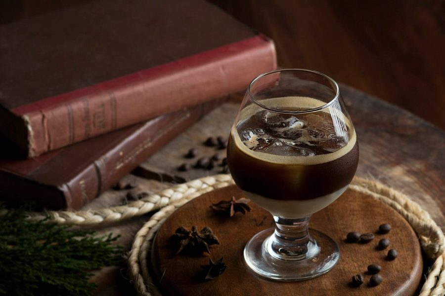

Let's build yourcoffee profile!
- Discover hand-picked cafés, with their story
- Collect a bean at every visit
- Share a café with your people
What are you looking for?
Pick any that fit. We'll lead with those.
Building your profile
What's your coffee shop mood?
Pick any that sound like you.
Building your profile
How much of a coffee lover are you?
No wrong answer. It decides how much story you see.
Building your profile
How many coffee shops a week?
A rough guess is perfect.
Pick one to see how fast you'll earn your first cup.
Where are you most days?
Pick up to three neighborhoods.
We only ask for your location if you tap it, and only to find cafés near you.
Building your profile
Building your coffee profile.
- Reading what you're looking for
- Matching your coffee shop mood
- Tuning the stories to your level
Meet your coffee profile.
Your first picks
picked for you.
Your card is ready.
You start with a bean.
1 of 10 beans
Every café you visit adds a bean. Ten beans make a cup, and every café in Paris counts.
Save your picks and your card.
So they follow you to any phone. We'll email you a code. No passwords.
We only use your email to sign you in and send your access. Privacy
Welcome to the club.
Your picks are ready, your card has its first bean, and the swipe book is waiting.